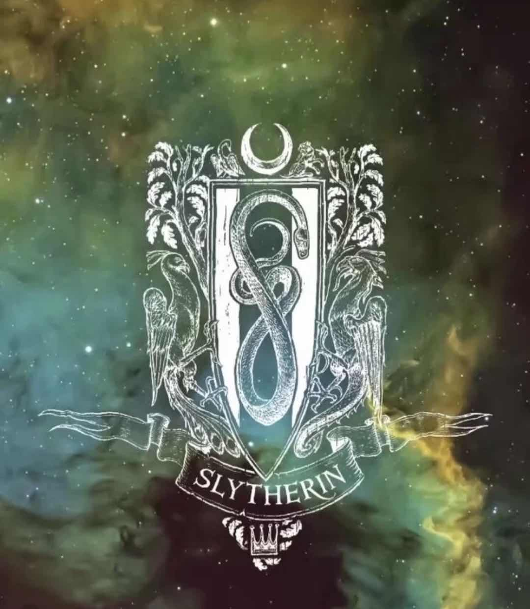
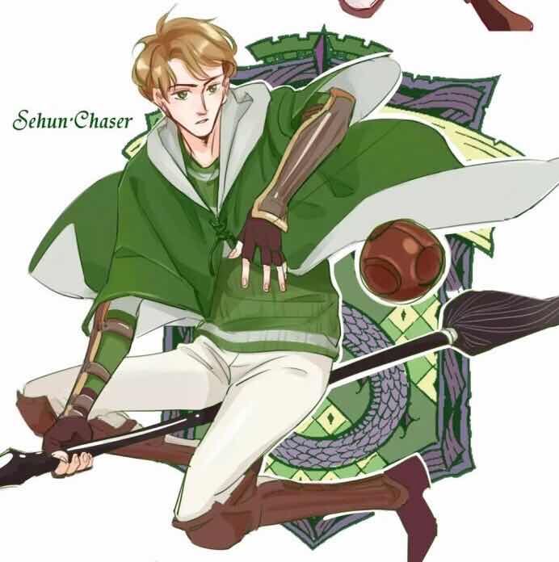

霍格沃茨四大分院
斯莱特林
斯莱特林
《哈利波特》系列中霍格沃茨的四大学院之一。创始人为四巨头（The great four）之一的萨拉查·斯莱特林（Salazar·Slytherin）。 学院传统：有野心，精明，重视荣誉，审时度势，明哲保身，胜利至上。

学院资料
也许你会进斯莱特林，
也许你在这里交上真诚的朋友，
但那些狡诈阴险之辈却会不惜一切手段，
去达到他们的目的。 ——— 分院帽
"Or perhaps in Slytherin,
You'll make your real friends,
Those cunning folk use any means,
To achieve their ends."
斯莱特林
—The Sorting Hat
英文名：Slytherin
创建人：萨拉查·斯莱特林（Salazar·Slytherin）
代表色：绿色、银色
代表动物：蛇
大致对应元素：水 [1]
创始人遗物：斯莱特林的挂坠盒（没有复活石制成的戒指，那是“三兄弟”的遗物）
招生标准：精明强大的斯莱特林，来自那一片泥潭，而渴望权力的他最喜欢那些血统纯正、有野心的少年。
按照阿不思·邓布利多所说，萨拉查·斯莱特林在挑选学生时特别看重的素质有聪颖、足智多谋、意志坚强，还有“某种对法律条规的藐视”。邓布利多指出哈利·波特具有全部这些素质，但是他在格兰芬多学院。相反，文森特·克拉布和格雷戈里·高尔都相当愚蠢，并没有精明、灵巧的头脑，却都被分进了斯莱特林。前面的情况是因为哈利·波特强烈要求不进斯莱特林，而后面的情况则可能是他们具备一些次要的斯莱特林的特质，就如小矮星彼得进入格兰芬多显然不是因为勇敢，而是因为骑士精神。
学院性格：精明，圆滑，野心，明哲保身，不择手段，意志坚强，才能，友爱，权力。 [1]
院训：Slytherin will help you on the way to greatness（斯莱特林会帮助你达到巅峰）。
入口：地下室中一堵湿乎乎的石墙中隐藏的石门。口令每两星期改变一次。
公共休息室：一间位于湖底（黑湖）的半透明休息室，墙由黑色的哥特式大理石砌成，天花板是水晶雕刻的透明半圆，可以看到头顶上粼粼的波光。天花板上用链子栓着泛绿光的灯。室内有一壁炉，带有雕刻精美的壁炉台，旁边有些雕花椅。常常可以透过窗户看见一些巨大的章鱼或奇怪生物。
院长：萨拉查·斯莱特林（Salazar·Slytherin）、菲尼亚斯·奈杰勒斯·布莱克、西弗勒斯·斯内普、霍拉斯·斯拉格霍恩。
幽灵：血人巴罗，是调皮、爱搞恶作剧的鬼魂皮皮鬼唯一害怕的人。生前被拉文克劳派去找她失踪的女儿——他爱的人海莲娜·拉文克劳，激动中杀死了海莲娜，心怀愧疚，于是自杀，至今戴着镣铐以惩罚自己。
级长：德拉科·马尔福，潘西·帕金森（书中只正面提及到德拉科和潘西，但在斯内普的回忆中出现过佩戴着级长徽章的卢修斯·马尔福，原著中也有提过汤姆（伏地魔）曾担任过级长）。
注：斯莱特林并不是贵族的象征，魔法界没有贵族也没有王族（但卢修斯马尔福在麻瓜世界是贵族，与王室存在商业盟友关系，因而拥有爵位），只有纯血统和非纯血统之分（原著中卢平对哈利说，巫师没有王子。Harry Potter VI）。
分院帽歌
也许你会进斯莱特林，
也许你在这里交上真诚的朋友，
但那些狡诈阴险之辈却会不惜一切手段，
去达到他们的目的。
Or perhaps in Slytherin
You'll make your real friends,
Those cunning folk use any means
To achieve their ends.
——《哈利波特与魔法石》（《Harry Potter and the Philosopher's Stone》）
精明的斯莱特林，来自那一片泥潭。
Shrewd Slytherin, from fin.
而渴望权力的斯莱特林
最喜欢那些有野心的少年。
And power-hungry Slytherin Loved those of great ambition.
——《哈利波特与火焰杯》（《Harry Potter and the Goblet of Fire》）
有哪一对朋友，
能比斯莱特林和格兰芬多更好？
除非你算上另一对挚友——
赫奇帕奇和拉文克劳？
For were there such friends anywhere
As Slytherin and Gryffindor?
Unless it was the second pair
Of Hufflepuff and Ravenclaw?
斯莱特林说：“我们所教的学生，
他们的血统必须最最纯正。”
Said Slytherin, 'We'll teach just those
Whose ancestry is purest.'
斯莱特林教的巫师如他本人，
血统纯正、诡计多端。
For instance, Slytherin
Took only pure-blood wizards
Of great cunning, just like him,
无数的吵闹，无数的争斗，
昔日的好朋友反目成仇。
后来终于在某一天清晨，
年迈的斯莱特林突然出走。
尽管那时纷争已经平患，
他还是灰心地离我们而去。
What with duelling and with fighting
And the clash of friend on friend
And at last there came a morning
When old Slytherin departed
And though the fighting then died out
He left us quite downhearted.
——《哈利波特和凤凰社》（《Harry Potter and the Order of the Phoenix》）
本院人物
菲尼亚斯·奈杰勒斯·布莱克
菲尼亚斯·奈杰勒斯·布莱克是霍格沃茨魔法学校历史上的第一个出自斯莱特林的校长。他的家族——布莱克家族，与马尔福家族类似，是巫师界仅存的纯血大家族，除了小天狼星.布莱克（西里斯.布莱克）以外全就读于斯莱特林。
伏地魔
是萨拉查·斯莱特林的最后一代传人，本名汤姆·马沃罗·里德尔，汤姆是他父亲的名字，马沃罗是他外祖父的名字。他的母亲是萨拉查·斯莱特林女儿的后代，冈特家的梅洛普·冈特。伏地魔是一位法力高强的人，魔法造诣很高，早年做黑魔法实验将黑魔法推到了前所未有的高度，学生时代他是老师们眼中品学兼优的男学生会主席，还曾（因嫁祸海格，举报他打开密室）获得特殊贡献奖，那时候他帅气绅士，魅力强大，使贝拉特里克斯（布莱克家族的食死徒）深陷他的魅力难以自拔。他厌恶自己平常的名字，当得知自己身份（父亲是麻瓜，抛弃了他的巫师母亲）后将自己的名字改为“伏地魔”（法文中直译为飞离死亡）。为了永生灵魂超越极限，他将自己的灵魂分裂成七份（6个魂器与伏地魔本身，试图杀死哈利时又无意中分裂第八份附在哈利体内）。六个魂器分别为；伏地魔的蛇纳吉尼，赫奇帕奇的金杯，斯莱特林的挂坠盒，拉文克劳的冠冕，里德尔的日记和马沃罗的戒指。基于伏地魔并没有施出那个魔咒，哈利波特并不是魂器。哈利身体中那部分灵魂并没有封存进去。他的存在的时期分为两大时期，第一时期在1981年结束（他被1岁的哈利波特“打败”），第二时期开始于1994年，终于1998年（被击败）。那些时候是魔法史上最恐怖冰冷的时期，伏地魔和他的追随者食死徒们滥杀麻瓜、迫害麻瓜出身的巫师以及一部分混血巫师，许多人被杀死、被折磨、被迫与亲人分离。人们不敢直呼其名，通常称他“神秘人”或者“黑魔头”和”那个连名字也不能提的人“，（You-Know-Who）他的手下称他“黑魔王（the dark lord）”，在他面前则叫他“主人”（my lord）。擅长黑魔法，尤其是不可饶恕咒，但总爱犯最低级的错误。（邓布利多这样认为）然而在许多同人文之中，作者更偏向对汤姆生世的怜悯，汤姆的身世可怜，因此产生对力量的渴望。
雷古勒斯·布莱克
全名雷古勒斯·阿克图勒斯·布莱克，小天狼星布莱克的弟弟，是菲尼亚斯的后代，曾是伏地魔的食死徒。后来背叛了伏地魔，为摧毁伏地魔作出了贡献。他为换出伏地魔的一个魂器（斯莱特林的挂坠盒）献出了生命，被阴尸杀死。他是公认的英雄，早期与其哥哥小天狼星不合。
西弗勒斯·斯内普
伟大的魔药专家，真正的斯莱特林。专情，执着、严厉、偏执的男人。出自斯莱特林的校长。因为名字的发音（Severus）而被格兰芬多掠夺者四人组戏称“鼻涕精（Snivellus）”。曾是伏地魔的手下，但为了哈利·波特的母亲——莉莉·波特，背叛了伏地魔，成了阿不思·邓布利多的间谍，并且一直用自己的方式保护着哈利·波特。在最后战役的关键时刻，为了获得伏地魔绝对的信任，听从了邓布利多的安排亲手杀死了最伟大的正义巫师，直到最后被伏地魔杀死，将全部的记忆给了哈利之后才解除了人们一贯对他“是个懦夫！”“邪恶的食死徒”的误会。擅长魔药，大脑封闭术与摄神取念，黑魔法及其防御。19年后，哈利对他的儿子阿不思·西弗勒斯·波特说：“而他大概是我见过的最勇敢的人了。”斯内普的守护神和莉莉一样，在于邓布利多对话时，一句“always”令无数人潸然泪下，在将死之际，对哈利的“LOOK AT ME”更是让人回想起他的一世深情。
卢修斯·马尔福
淡金色的头发、冰冷的淡灰色双眼、苍白的尖脸。他骄傲自大的性格或许来源于家族的遗传，他的儿子德拉科·马尔福也跟他一样。卢修斯·马尔福可谓是个狡猾危险的人物，但这只是表象，跟马尔福家族的所有成员一样，他背负着延续家族的使命，他也有着不为人知的苦楚。卢修斯进入了斯莱特林学院。无疑，斯莱特林这个学院所有危险的特征在他身上都表现了出来。毕业后就加入了食死徒的行列，他对初期伏地魔扩大势力起了重要作用，也为自己获得了不少的财富和地位。伏地魔失败后卢修斯利用了自己的权利免去了控告和监狱生活。在最后的决战中，和妻子（纳西莎·马尔福）为了寻找儿子（德拉科·马尔福），没有参加战争。纳西莎因欺骗伏地魔救了哈利，以及最后的倒戈，一家人没有被关进阿兹卡班。
德拉科·马尔福
卢修斯·马尔福的儿子，出生于1980年6月5日，同马尔福家的绝大多数人一样，是斯莱特林学院的学生。在书中他被描述成一个长相出众、脸色苍白、拥有淡金色头发和冷酷的灰色眼睛的人。他和他的父亲一样，有淡金色的头发，他的口头禅是“我爸爸”。在一年级的时候，因为与哈利·波特交友不成功，所以与格兰芬多三人组对峙。潘西·帕金森非常喜欢他。在HP中第六集混血王子，他曾帮助食死徒修好消失柜，让大量食死徒进入霍格沃兹，一度成为老魔杖的主人。同时，西弗勒斯·斯内普就在天文台上杀了阿不思·邓布利多校长，因此取得伏地魔的信任。（德拉科·马尔福加入食死徒大多是因为伏地魔拿父母的性命作要挟，也有一部分炫耀的心思，并非完全自愿）。在最后一集的战争中，哈利·波特在有求必应屋里救了他，当他母亲纳西莎·马尔福问哈利·波特是否还在时，他肯定德拉科还在，所以纳西莎救了他，在最后的战争中与父母叛逃。因此，马尔福一家没被关进阿兹卡班。19年后他与格林格拉斯家族的女儿阿斯托利亚·格林格拉斯结婚，生下了儿子斯科皮·马尔福，在站台遇见了哈利，金妮与他们的三个孩子。
梅林
巧克力蛙上的巫师。魔法世界经常使用的“Merlin’s beard”和“What in the name of Merlin!”类似这样的说法表示感叹之情。梅林是史上最伟大的巫师。
斯莱特林
得知梅林是斯莱特林学院的原因：Pottermore的欢迎信上提到“还有一点其他学院不愿提及的事实：梅林是位斯莱特林。是的，史上最伟大的巫师，梅林本身就是位斯莱特林。他的学识都来自斯莱特林的教诲。” 原文：Here’s a little-known fact that the other three houses don’t bring up much: Merlin was a Slytherin. Yes, Merlin himself, the most famous wizard in history! He learned all he knew in this very house!
但是也有别的说法：
这里认为梅林属于斯莱特林是罗琳编写时的失误，但罗琳认为假设要给梅林分院他应当属于斯莱特林。
以下资料：
关于亚瑟王的传奇故事，最初如何诞生，源自何处，皆无从查考。究竟亚瑟王是不是以某位历史人物作为基础塑造出来的虚构角色也不得而知。如果确实存在亚瑟王这个人物，史学家据推测他所生活的年代大概是公元500年左右，其间是一段50年左右（符合所知的各亚瑟王版本）的时期。
